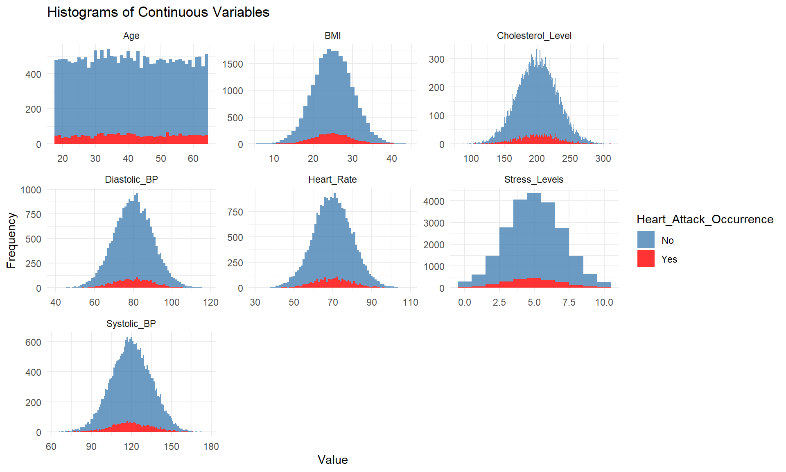

pacman::p_load(haven, SmartEDA, tidyverse, tidymodels, ggdist, ggridges, ggthemes,
colorspace, gridExtra, ggstatsplot, GGally,
readxl, performance, parameters, car,aod, ggExtra, ggiraph, corrplot)Take-Home Exercise 01
This quota document shows the visual analytics conducted for the Take Home Exercise 01, The data set chosen is the Heart Attack in Japan Youth Vs Adult from Kaggle.
Required Task
The main task is to develop graphical visuals for a media company on an article for the possible factors leading to heart attack trends in Japanese Youth.
The plan is to carry out exploratory and confirmatory data analysis to confirm the observed trend before doing up the visuals required for the graphic.
The goal is to find out if there are any observable trends and health or lifestyle factors leading to the occurrence of heart attack in Japanese youth.
For the purpose of this analysis, I define Japanese youth as individuals under the age of 35, following the definition provided in the article on Youth Employment Policies in Japan. The data set is catogrised into 4 main groups as follows:
- Youths who have experienced a heart attack (interest group),
- Youths who have not experienced a heart attack,
- Adults who have experienced a heart attack,
- Adults who have not experienced a heart attack.
Population with age above 65, they will be omitted from this study as age above 65 and above are considered as elderly based on the Wikipedia.
1.0 Loading of Packages
The following code chunk indicates the list of packages used for this Take Home Exercise 01.
2.0 Importing of Data and Data Preparation.
2.1 Importing data.
As the data is in csv file format, the data is loaded using read_csv function.
heart <- read_csv("data/Ex01/japan_heart_attack_dataset.csv")2.2 Data Preparation
As the metadata did not specify the data in the extra column 1 to 15, hence we will not be able the data in the “Extra_column 1 to 15”
The first step of data preparation is to remove them first, and remove population who are above 64.
heart <- heart %>% select (1:17) %>% filter (Age < 65)The summary and head functions are used to view and examine the data before proceeding further.
summary(heart) Age Gender Region Smoking_History
Min. :18.0 Length:22671 Length:22671 Length:22671
1st Qu.:29.0 Class :character Class :character Class :character
Median :41.0 Mode :character Mode :character Mode :character
Mean :40.9
3rd Qu.:53.0
Max. :64.0
Diabetes_History Hypertension_History Cholesterol_Level Physical_Activity
Length:22671 Length:22671 Min. : 80.02 Length:22671
Class :character Class :character 1st Qu.:179.45 Class :character
Mode :character Mode :character Median :199.72 Mode :character
Mean :199.83
3rd Qu.:220.10
Max. :311.24
Diet_Quality Alcohol_Consumption Stress_Levels BMI
Length:22671 Length:22671 Min. : 0.000 Min. : 5.58
Class :character Class :character 1st Qu.: 3.637 1st Qu.:21.64
Mode :character Mode :character Median : 4.973 Median :24.97
Mean : 4.988 Mean :25.00
3rd Qu.: 6.337 3rd Qu.:28.39
Max. :10.000 Max. :44.12
Heart_Rate Systolic_BP Diastolic_BP Family_History
Min. : 30.59 Min. : 63.1 Min. : 39.95 Length:22671
1st Qu.: 63.23 1st Qu.:109.8 1st Qu.: 73.23 Class :character
Median : 69.92 Median :119.9 Median : 80.11 Mode :character
Mean : 69.93 Mean :120.0 Mean : 80.03
3rd Qu.: 76.63 3rd Qu.:130.2 3rd Qu.: 86.78
Max. :108.78 Max. :176.6 Max. :117.66
Heart_Attack_Occurrence
Length:22671
Class :character
Mode :character
head (heart)# A tibble: 6 × 17
Age Gender Region Smoking_History Diabetes_History Hypertension_History
<dbl> <chr> <chr> <chr> <chr> <chr>
1 56 Male Urban Yes No No
2 46 Male Rural Yes No No
3 32 Female Urban No No No
4 60 Female Rural No No No
5 25 Female Rural No No No
6 38 Female Urban Yes No No
# ℹ 11 more variables: Cholesterol_Level <dbl>, Physical_Activity <chr>,
# Diet_Quality <chr>, Alcohol_Consumption <chr>, Stress_Levels <dbl>,
# BMI <dbl>, Heart_Rate <dbl>, Systolic_BP <dbl>, Diastolic_BP <dbl>,
# Family_History <chr>, Heart_Attack_Occurrence <chr>2.3 Check for missing values
is.na function is used to check if the data contain any missing values,if there are, they are being added.
colSums(is.na(heart)) Age Gender Region
0 0 0
Smoking_History Diabetes_History Hypertension_History
0 0 0
Cholesterol_Level Physical_Activity Diet_Quality
0 0 0
Alcohol_Consumption Stress_Levels BMI
0 0 0
Heart_Rate Systolic_BP Diastolic_BP
0 0 0
Family_History Heart_Attack_Occurrence
0 0 After removing the Extra columns, we continue by examining again the data using the summary and head functions to ensure that the extra columns are successfully removed.
summary(heart) Age Gender Region Smoking_History
Min. :18.0 Length:22671 Length:22671 Length:22671
1st Qu.:29.0 Class :character Class :character Class :character
Median :41.0 Mode :character Mode :character Mode :character
Mean :40.9
3rd Qu.:53.0
Max. :64.0
Diabetes_History Hypertension_History Cholesterol_Level Physical_Activity
Length:22671 Length:22671 Min. : 80.02 Length:22671
Class :character Class :character 1st Qu.:179.45 Class :character
Mode :character Mode :character Median :199.72 Mode :character
Mean :199.83
3rd Qu.:220.10
Max. :311.24
Diet_Quality Alcohol_Consumption Stress_Levels BMI
Length:22671 Length:22671 Min. : 0.000 Min. : 5.58
Class :character Class :character 1st Qu.: 3.637 1st Qu.:21.64
Mode :character Mode :character Median : 4.973 Median :24.97
Mean : 4.988 Mean :25.00
3rd Qu.: 6.337 3rd Qu.:28.39
Max. :10.000 Max. :44.12
Heart_Rate Systolic_BP Diastolic_BP Family_History
Min. : 30.59 Min. : 63.1 Min. : 39.95 Length:22671
1st Qu.: 63.23 1st Qu.:109.8 1st Qu.: 73.23 Class :character
Median : 69.92 Median :119.9 Median : 80.11 Mode :character
Mean : 69.93 Mean :120.0 Mean : 80.03
3rd Qu.: 76.63 3rd Qu.:130.2 3rd Qu.: 86.78
Max. :108.78 Max. :176.6 Max. :117.66
Heart_Attack_Occurrence
Length:22671
Class :character
Mode :character
head(heart)# A tibble: 6 × 17
Age Gender Region Smoking_History Diabetes_History Hypertension_History
<dbl> <chr> <chr> <chr> <chr> <chr>
1 56 Male Urban Yes No No
2 46 Male Rural Yes No No
3 32 Female Urban No No No
4 60 Female Rural No No No
5 25 Female Rural No No No
6 38 Female Urban Yes No No
# ℹ 11 more variables: Cholesterol_Level <dbl>, Physical_Activity <chr>,
# Diet_Quality <chr>, Alcohol_Consumption <chr>, Stress_Levels <dbl>,
# BMI <dbl>, Heart_Rate <dbl>, Systolic_BP <dbl>, Diastolic_BP <dbl>,
# Family_History <chr>, Heart_Attack_Occurrence <chr>heart <- heart %>%
mutate(Age_Grp = ifelse(Age > 35, "Adult", "Youth"))2.4 Transforming the data to the 4 main sub group.
It was observed that the data consist two types of variables: namely continuous and categorical.
As mentioned in section 1.0, the data will be categorised into the 4 main group.
Given that the continuous data are consist of variables such as heart rate, cholesterol level, Systolic and Diastolic Blood Pressure, they are being categorized to established category . For this purpose of the analysis, we will use the range indicate in the following sites and with the help of Microsoft Co-pilot.
Using the following codes, the data are categorised into 4 main groups and the health indicators are categorized into the established data.
HA <- heart %>%
mutate(Event_Grp = ifelse(Age_Grp == "Adult" & Heart_Attack_Occurrence == "Yes", "Adult_HA",
ifelse(Age_Grp == "Adult" & Heart_Attack_Occurrence == "No", "Adult_No_HA",
ifelse(Age_Grp == "Youth" & Heart_Attack_Occurrence == "Yes", "Youth_HA",
ifelse(Age_Grp == "Youth" & Heart_Attack_Occurrence == "No", "Youth_No_HA",NA)))))
HA <- HA %>%
mutate(BMI_cat = case_when(
BMI < 18.5 ~ "Underweight",
BMI >= 18.5 & BMI < 25 ~ "Normal",
BMI >= 25 & BMI < 30 ~ "Overweight",
BMI >= 30 ~ "Obese",
TRUE ~ NA_character_
))
HA <- HA %>%
mutate(BP_cat = case_when(
Systolic_BP < 120 & Diastolic_BP < 80 ~ "Normal",
(Systolic_BP >= 120 & Systolic_BP < 130) & Diastolic_BP < 80 ~ "Elevated",
(Systolic_BP >= 130 & Systolic_BP < 140) | (Diastolic_BP >= 80 & Diastolic_BP < 90) ~ "High Stage 1",
Systolic_BP >= 140 | Diastolic_BP >= 90 ~ "High Stage 2",
TRUE ~ NA_character_
))
HA <- HA %>%
mutate(Cholesterol_Level_cat = case_when(
Cholesterol_Level < 200 ~ "Desirable",
Cholesterol_Level >= 200 & Cholesterol_Level < 240~ "Borderline High",
Cholesterol_Level >= 240 ~ "High",
TRUE ~ NA_character_
))
HA <- HA %>%
mutate(Stress_Level_cat = case_when(
Stress_Levels < 3 ~ "Low",
Stress_Levels >= 3 & Stress_Levels < 6 ~ "Moderate",
Stress_Levels >= 6 ~ "High",
TRUE ~ NA_character_
))
HA <- HA %>%
mutate(Heart_Rate_cat = case_when(
Heart_Rate < 70 ~ "Below Normal",
Heart_Rate >= 70 & Heart_Rate <= 100 ~ "Normal",
Heart_Rate > 100 ~ "Elevated",
TRUE ~ NA_character_
))Examine of missing data after recoding
note that there are 277 recids of BMI data and 108 of chelesterol records not being
missing_values <- colSums(is.na(HA))
print(missing_values) Age Gender Region
0 0 0
Smoking_History Diabetes_History Hypertension_History
0 0 0
Cholesterol_Level Physical_Activity Diet_Quality
0 0 0
Alcohol_Consumption Stress_Levels BMI
0 0 0
Heart_Rate Systolic_BP Diastolic_BP
0 0 0
Family_History Heart_Attack_Occurrence Age_Grp
0 0 0
Event_Grp BMI_cat BP_cat
0 0 0
Cholesterol_Level_cat Stress_Level_cat Heart_Rate_cat
0 0 0 summary(HA) Age Gender Region Smoking_History
Min. :18.0 Length:22671 Length:22671 Length:22671
1st Qu.:29.0 Class :character Class :character Class :character
Median :41.0 Mode :character Mode :character Mode :character
Mean :40.9
3rd Qu.:53.0
Max. :64.0
Diabetes_History Hypertension_History Cholesterol_Level Physical_Activity
Length:22671 Length:22671 Min. : 80.02 Length:22671
Class :character Class :character 1st Qu.:179.45 Class :character
Mode :character Mode :character Median :199.72 Mode :character
Mean :199.83
3rd Qu.:220.10
Max. :311.24
Diet_Quality Alcohol_Consumption Stress_Levels BMI
Length:22671 Length:22671 Min. : 0.000 Min. : 5.58
Class :character Class :character 1st Qu.: 3.637 1st Qu.:21.64
Mode :character Mode :character Median : 4.973 Median :24.97
Mean : 4.988 Mean :25.00
3rd Qu.: 6.337 3rd Qu.:28.39
Max. :10.000 Max. :44.12
Heart_Rate Systolic_BP Diastolic_BP Family_History
Min. : 30.59 Min. : 63.1 Min. : 39.95 Length:22671
1st Qu.: 63.23 1st Qu.:109.8 1st Qu.: 73.23 Class :character
Median : 69.92 Median :119.9 Median : 80.11 Mode :character
Mean : 69.93 Mean :120.0 Mean : 80.03
3rd Qu.: 76.63 3rd Qu.:130.2 3rd Qu.: 86.78
Max. :108.78 Max. :176.6 Max. :117.66
Heart_Attack_Occurrence Age_Grp Event_Grp
Length:22671 Length:22671 Length:22671
Class :character Class :character Class :character
Mode :character Mode :character Mode :character
BMI_cat BP_cat Cholesterol_Level_cat Stress_Level_cat
Length:22671 Length:22671 Length:22671 Length:22671
Class :character Class :character Class :character Class :character
Mode :character Mode :character Mode :character Mode :character
Heart_Rate_cat
Length:22671
Class :character
Mode :character
2.5 Re-coding Catological data for Logistic Regression
HA <- HA %>%
mutate(Heart_Attack_Occurrence_num = case_when(
Heart_Attack_Occurrence == "Yes" ~ 1,
Heart_Attack_Occurrence == "No" ~ 0,
TRUE ~ NA_real_),
Gender_num = case_when(
Gender == "Male" ~ 1,
Gender == "Female" ~ 0,
TRUE ~ NA_real_),
Region_num = case_when(
Region == "Urban" ~ 1,
Region == "Rural" ~ 0,
TRUE ~ NA_real_),
Smoking_History_num = case_when(
Smoking_History == "Yes" ~ 1,
Smoking_History == "No" ~ 0,
TRUE ~ NA_real_),
Diabetes_History_num = case_when(
Diabetes_History == "Yes" ~ 1,
Diabetes_History == "No" ~ 0,
TRUE ~ NA_real_),
Hypertension_History_num = case_when(
Hypertension_History == "Yes" ~ 1,
Hypertension_History == "No" ~ 0,
TRUE ~ NA_real_),
Family_History_num = case_when(
Family_History == "Yes" ~ 1,
Family_History == "No" ~ 0,
TRUE ~ NA_real_),
Physical_Activity_num = case_when(
Physical_Activity == "High" ~ 0,
Physical_Activity == "Moderate" ~ 1,
Physical_Activity == "Low" ~ 2,
TRUE ~ NA_real_),
Diet_Quality_num = case_when(
Diet_Quality == "Good" ~ 0,
Diet_Quality == "Average" ~ 1,
Diet_Quality == "Poor" ~ 2,
TRUE ~ NA_real_),
Alcohol_Consumption_num = case_when(
Alcohol_Consumption == "None" ~ 0,
Alcohol_Consumption == "Low" ~ 1,
Alcohol_Consumption == "Moderate" ~ 2,
Alcohol_Consumption == "High" ~ 3,
TRUE ~ NA_real_),
Stress_Level_cat_num = case_when(
Stress_Level_cat == "Low" ~ 0,
Stress_Level_cat == "Moderate" ~ 1,
Stress_Level_cat == "High" ~ 2,
TRUE ~ NA_real_),
BMI_cat_num = case_when(
BMI_cat == "Underweight" ~ 0,
BMI_cat == "Normal" ~ 1,
BMI_cat == "Overweight" ~ 2,
BMI_cat == "Obese" ~ 2,
TRUE ~ NA_real_),
Heart_Rate_cat_num = case_when(
Heart_Rate_cat == "Below Normal" ~ 0,
Heart_Rate_cat == "Normal" ~ 1,
Heart_Rate_cat == "Elevated" ~ 2,
TRUE ~ NA_real_),
BP_cat_num = case_when(
BP_cat == "Normal" ~ 0,
BP_cat == "Elevated" ~ 1,
BP_cat == "High Stage 1" ~ 2,
BP_cat == "High Stage 2" ~ 3,
TRUE ~ NA_real_),
Cholesterol_Level_cat_num = case_when(
Cholesterol_Level_cat == "Desirable" ~ 0,
Cholesterol_Level_cat == "Borderline High" ~ 1,
Cholesterol_Level_cat == "High" ~ 2,
TRUE ~ NA_real_))Checking of data after re-coding.
missing_values <- colSums(is.na(HA))
print(missing_values) Age Gender
0 0
Region Smoking_History
0 0
Diabetes_History Hypertension_History
0 0
Cholesterol_Level Physical_Activity
0 0
Diet_Quality Alcohol_Consumption
0 0
Stress_Levels BMI
0 0
Heart_Rate Systolic_BP
0 0
Diastolic_BP Family_History
0 0
Heart_Attack_Occurrence Age_Grp
0 0
Event_Grp BMI_cat
0 0
BP_cat Cholesterol_Level_cat
0 0
Stress_Level_cat Heart_Rate_cat
0 0
Heart_Attack_Occurrence_num Gender_num
0 0
Region_num Smoking_History_num
0 0
Diabetes_History_num Hypertension_History_num
0 0
Family_History_num Physical_Activity_num
0 0
Diet_Quality_num Alcohol_Consumption_num
0 0
Stress_Level_cat_num BMI_cat_num
0 0
Heart_Rate_cat_num BP_cat_num
0 0
Cholesterol_Level_cat_num
0 2.6 Prepare of varies data frame for easy of infographic.
HA_Yes <- filter(HA, Heart_Attack_Occurrence == "Yes")
HA_adult <- filter(HA, Age_Grp == "Adult")
HA_youth <- filter(HA, Age_Grp == "Youth")
HA_youth_yes <- filter(HA_youth, Heart_Attack_Occurrence == "Yes")3.0 Exploratory Data Analysis (EDA)
We start off by understanding the distribution of the variables and examine if there were any observable trends to be tested out using confirmatory analysis.
3.1 Visualising Distribution of the Categorical Variables
The aim of this task is to examine if there are any trends in categorical data in the occurrence of heart attack in Japanese population.
The code below is extract our the categorical data and summaries into the occurrence of heart attack by Heart occurrence Age Groups and Event Groups.
The data are processed using the following codes to allow flexibility when exploring the data set.Hence HA is being used instead of the subgroups. Those data sets would be used in the subsequent visuslisation.
categorical_columns <- HA %>% select(where(~is.character(.x) || is.factor(.x)))
count_occurrences <- categorical_columns %>%
pivot_longer(cols= - c(Heart_Attack_Occurrence, Age_Grp, Event_Grp), names_to = "Category", values_to = "Value") %>%
group_by(Category, Value, Age_Grp, Heart_Attack_Occurrence, Event_Grp) %>%
summarise(Occurrences = n(), .groups = 'drop')bar_plots <- count_occurrences %>%
ggplot(aes(x = Value, y = Occurrences, fill = Heart_Attack_Occurrence)) +
geom_bar(stat = "identity", position = position_dodge()) +
facet_wrap(~ Category, scales = "free") +
theme_minimal() +
labs(title = "Distribution of Categorical Variables of The Study Population.",
x = "Unique Values",
y = "Count") +
scale_fill_manual(values = c("Yes" = "red", "No" = "#4682B4"))
bar_plotsThe above chart shows the data distribution for the categorical variables of the data set.
It includes the entire data set of the risk factors with whom had have heart attack verse whom had not have attack in Japan in all age group.
Before visualizing the data, one would expect risk factors such as high cholesterol level, elevated heart rate and with smoking history, will likely result in more occurrence of heart attack in but solely by looking at the distribution of the data, this may not be true.
The main take away from the analysis is that it seems there is no sole risk factor which will lead to heart attack with the Japanese population sampled for this data set.
3.1.1 Closer Examination on the Distribution Categorical Variables in different Age group in Youth vs Adult
count_occurrences_yes <- filter(count_occurrences, Heart_Attack_Occurrence == "Yes")
bar_plots_yes <- count_occurrences_yes %>%
ggplot(aes(x = Value, y = Occurrences, fill = Age_Grp)) +
geom_bar(stat = "identity", position = position_dodge()) +
facet_wrap(~ Category, scales = "free") +
theme_minimal() +
labs(title = "Distribution of Categorical Variables of subjects with Heart Attack Across Age Groups",
y = "Count") +
scale_fill_manual(values = c("Youth" = "#FF1493", "Adult" = "#FFA07A"))
bar_plots_yes
Due to the study population, contains more subjects with heart attack, it is good to visualise the distribution across the age groups with heart attack. This may provide some interesting insights.
The charts above show the distribution of the categorical variables for study subjects who had heart attack across different age groups.
At a glance, the general distribution across categorical variables may seem to be similar across both age groups but at a closer examination. the following observations could be seen:
BP_cat “high stage 1” in adults has higher occurrence in heart attack when compared to youth.
In youth, the occurrence of heart attack across gender while in adult a slightly in male verse female.
There seems to be have more occurrence in heart attack occurring in urban setting than rural setting.
It seem to have association between BMI and heart attack with more slight more occurrence in overweight subjects as compared to other BMI category.
It seems that there is association with moderate stress level with high proportion in both age groups.
From the distribution, it seems that there is no sole factor which stand out in the youth population which will result in heart attack, confirmatory analysis would be need to confirm the analysis or explanatory model using logistic regression could be carried out to further explain risk factors.
3.1.2 Closer Examination on the Distribution Categorical Variables in the Youth Age group.
count_occurrences_youth <- filter(count_occurrences, Age_Grp == "Youth")
bar_plots_yes <- count_occurrences_youth %>%
ggplot(aes(x = Value, y = Occurrences, fill = Heart_Attack_Occurrence)) +
geom_bar(stat = "identity", position = position_dodge()) +
facet_wrap(~ Category, scales = "free") +
theme_minimal() +
labs(title = "Distribution of Categorical Variables of subjects with Heart Attack in Youth",
y = "Count") +
scale_fill_manual(values = c("Yes" = "#FF1493", "No" = "#87CEEB"))
bar_plots_yes
Similar to the bar charts in section 3.1, there is no sole risk factor which stands out in the categorical variables which lead to high occurrence in the youth population.
3.2 Visualising Distribution of the Continuous Variables
The following codes is to prepared the data to plot histogram to visualise the continuous data.
The data is prepared this manner so that it will provide flexibility in showing data.
contin_col_HA <- heart %>% select(where(is.numeric), Heart_Attack_Occurrence, Age_Grp)
contin_col_HA_youth <- filter(contin_col_HA, Age_Grp == "Youth")
contin_col_HA_Yes <- filter(contin_col_HA, Heart_Attack_Occurrence == "Yes")
contin_col_HA_Long<-contin_col_HA %>%
pivot_longer(cols = -c(Heart_Attack_Occurrence, Age_Grp), names_to = "Field", values_to = "Value")
contin_col_HA_Long_Yes <- filter(contin_col_HA_Long, Heart_Attack_Occurrence == "Yes")
contin_col_HA_Long_youth <- filter(contin_col_HA_Long, Age_Grp == "Youth") histograms_HA <- ggplot(contin_col_HA_Long, aes(x = Value, fill = Heart_Attack_Occurrence )) +
geom_histogram(binwidth = 1, alpha = 0.8) +
theme_minimal() +
labs(title = "Histograms of Continuous Variables", y = "Frequency")+
facet_wrap(~ Field, scales = "free") +
scale_fill_manual(values = c("Yes" = "red", "No" = "#4682B4"))
histograms_HA
To visualise the continuous variables, the continuous variables were plotted using the Heart data without re-coding. This is to allow us to be able to view this distribution of the continuous variables.
Based on the histogram, the distribution of of the continuous variables for BMI, Cholesterol Level, Diastolic and Systolic blood pressure, stress levels and heart rate seems to be over normal distribution. The overall trend is similar between across the subjects regardless if they had or had not have a heart attack.
3.2.1 Closer look and the Youth Age Group
histograms_HA_youth <- ggplot(contin_col_HA_Long_youth, aes(x = Value, fill = Heart_Attack_Occurrence )) +
geom_histogram(binwidth = 1, alpha = 0.8) +
theme_minimal() +
labs(title = "Histograms of Continuous Variables", y = "Frequency")+
facet_wrap(~ Field, scales = "free") +
scale_fill_manual(values = c("Yes" = "#FF1493", "No" = "#87CEEB"))
histograms_HA_youth
Comparing the occurrence of heart attack in youth, it follows the same distribution as the over all data. It was noted that similar to the overall data, there resembles the normality in the BMI, Cholesterol, Diastolic and systolic blood pressure, heart rate and stress levels.
This maybe logical as these variables are measure of bodily vitals or measurements, and due to homostasis the self regulating ability of the human body it will be normal to be peak in the center.
Hence to better understand variables, it may be more meaning for categorszed them into established bench marks such as what if the rest heart rate above 100 is considered as elevated.
#| fig-width: 24 #to widen the space
#| fig-height: 24 #to lengthen the graph
HA_youth %>%
ExpNumViz(target = "Heart_Attack_Occurrence",
nlim=10,
Page=c(2,4))$`0`
Besides histogram, given that the distribution is resemble normal distribution, boxplot could be useful type of chart to visualise if there are any differences across the variables. It was noted that there maybe slight differences in stress levels between the youth with heart attack verse youth without heart attack.
4.0 Confirmatory Data Analysis (CDA)
4.1 Chi Square test for youth data
Due to there is no trend observed by examining the barcharts, the chi square was ran using all variables.
After running the above associative test, the following code chunk to carry out the chi-square test to find our variables with association between heart attacks and categorical variables. The following codes on how to perform chi-square is generated using co-pilot.
analyze_association <- function(data, x, y) {
# Perform Chi-Square test
table <- table(data[[x]], data[[y]])
chi_test <- chisq.test(table)
# Print Chi-Square test results
print(paste("Chi-Square Test between", x, "and", y))
print(chi_test)
}
# Analyze association for each categorical column with Heart_Attack_Occurrence
for (column in colnames(categorical_columns)) {
if (!(column %in% c("Heart_Attack_Occurrence", "Event_Grp", "Age_Grp")))
analyze_association(HA_youth, column, "Heart_Attack_Occurrence")
}[1] "Chi-Square Test between Gender and Heart_Attack_Occurrence"
Pearson's Chi-squared test with Yates' continuity correction
data: table
X-squared = 0.058062, df = 1, p-value = 0.8096
[1] "Chi-Square Test between Region and Heart_Attack_Occurrence"
Pearson's Chi-squared test with Yates' continuity correction
data: table
X-squared = 0.25033, df = 1, p-value = 0.6168
[1] "Chi-Square Test between Smoking_History and Heart_Attack_Occurrence"
Pearson's Chi-squared test with Yates' continuity correction
data: table
X-squared = 0.16193, df = 1, p-value = 0.6874
[1] "Chi-Square Test between Diabetes_History and Heart_Attack_Occurrence"
Pearson's Chi-squared test with Yates' continuity correction
data: table
X-squared = 7.4232, df = 1, p-value = 0.006439
[1] "Chi-Square Test between Hypertension_History and Heart_Attack_Occurrence"
Pearson's Chi-squared test with Yates' continuity correction
data: table
X-squared = 1.0644, df = 1, p-value = 0.3022
[1] "Chi-Square Test between Physical_Activity and Heart_Attack_Occurrence"
Pearson's Chi-squared test
data: table
X-squared = 0.19892, df = 2, p-value = 0.9053
[1] "Chi-Square Test between Diet_Quality and Heart_Attack_Occurrence"
Pearson's Chi-squared test
data: table
X-squared = 3.2215, df = 2, p-value = 0.1997
[1] "Chi-Square Test between Alcohol_Consumption and Heart_Attack_Occurrence"
Pearson's Chi-squared test
data: table
X-squared = 3.487, df = 3, p-value = 0.3224
[1] "Chi-Square Test between Family_History and Heart_Attack_Occurrence"
Pearson's Chi-squared test with Yates' continuity correction
data: table
X-squared = 0.16224, df = 1, p-value = 0.6871
[1] "Chi-Square Test between BMI_cat and Heart_Attack_Occurrence"
Pearson's Chi-squared test
data: table
X-squared = 8.7346, df = 3, p-value = 0.03304
[1] "Chi-Square Test between BP_cat and Heart_Attack_Occurrence"
Pearson's Chi-squared test
data: table
X-squared = 3.0918, df = 3, p-value = 0.3777
[1] "Chi-Square Test between Cholesterol_Level_cat and Heart_Attack_Occurrence"
Pearson's Chi-squared test
data: table
X-squared = 3.9627, df = 2, p-value = 0.1379
[1] "Chi-Square Test between Stress_Level_cat and Heart_Attack_Occurrence"
Pearson's Chi-squared test
data: table
X-squared = 4.9121, df = 2, p-value = 0.08577[1] "Chi-Square Test between Heart_Rate_cat and Heart_Attack_Occurrence"
Pearson's Chi-squared test
data: table
X-squared = 0.78781, df = 2, p-value = 0.67444.2 Significant Test of Association (Dependence) : ggbarstats() methods
A_HA_youth_BMI <- ggbarstats(HA_youth,
x=BMI_cat,
y=Heart_Attack_Occurrence)
A_HA_youth_Dia <- ggbarstats(HA_youth,
x=Diabetes_History,
y=Heart_Attack_Occurrence)#| eval: false
#| fig-width: 120 #to widen the space
#| fig-height: 120 #to lengthen the graph
Patchwork_sig <- (A_HA_youth_Dia | A_HA_youth_BMI)
Patchwork_sig Using the ggbarstats, we are able to view the associations between diabetes history and BMI verse heart attack occurrence in youth.
For Diabetes history, it is clear that youth with diabetes history have higher association or may have high risk with heart attack as compared to youth without diabetes in the past.
For the BMI category, while the statistical test seems that BMI category may be significant, however it seems like the proportion of youth with normal BMI may result in high proportion of youth has heart attack. While it is consistent with general knowledge, it is noted the youth who are underweight has slightly less association of having heart attack.
Further analysis using logistic regression would be required to further understand the relationship.
4.3 Chi Square for subjects with heart attack of the two different age group
analyze_association <- function(data, x, y) {
# Perform Chi-Square test
table <- table(data[[x]], data[[y]])
chi_test <- chisq.test(table)
# Print Chi-Square test results
print(paste("Chi-Square Test between", x, "and", y))
print(chi_test)
}
# Analyze association for each categorical column with Heart_Attack_Occurrence
for (column in colnames(categorical_columns)) {
if (!(column %in% c("Heart_Attack_Occurrence", "Event_Grp", "Age_Grp")))
analyze_association(HA_Yes, column, "Age_Grp")
}[1] "Chi-Square Test between Gender and Age_Grp"
Pearson's Chi-squared test with Yates' continuity correction
data: table
X-squared = 1.4995, df = 1, p-value = 0.2207
[1] "Chi-Square Test between Region and Age_Grp"
Pearson's Chi-squared test with Yates' continuity correction
data: table
X-squared = 0.31905, df = 1, p-value = 0.5722
[1] "Chi-Square Test between Smoking_History and Age_Grp"
Pearson's Chi-squared test with Yates' continuity correction
data: table
X-squared = 0.53203, df = 1, p-value = 0.4658
[1] "Chi-Square Test between Diabetes_History and Age_Grp"
Pearson's Chi-squared test with Yates' continuity correction
data: table
X-squared = 4.7694, df = 1, p-value = 0.02897
[1] "Chi-Square Test between Hypertension_History and Age_Grp"
Pearson's Chi-squared test with Yates' continuity correction
data: table
X-squared = 0.012936, df = 1, p-value = 0.9094
[1] "Chi-Square Test between Physical_Activity and Age_Grp"
Pearson's Chi-squared test
data: table
X-squared = 0.93543, df = 2, p-value = 0.6264
[1] "Chi-Square Test between Diet_Quality and Age_Grp"
Pearson's Chi-squared test
data: table
X-squared = 1.4703, df = 2, p-value = 0.4794
[1] "Chi-Square Test between Alcohol_Consumption and Age_Grp"
Pearson's Chi-squared test
data: table
X-squared = 2.6902, df = 3, p-value = 0.4419
[1] "Chi-Square Test between Family_History and Age_Grp"
Pearson's Chi-squared test with Yates' continuity correction
data: table
X-squared = 0.084369, df = 1, p-value = 0.7715
[1] "Chi-Square Test between BMI_cat and Age_Grp"
Pearson's Chi-squared test
data: table
X-squared = 0.53648, df = 3, p-value = 0.9108
[1] "Chi-Square Test between BP_cat and Age_Grp"
Pearson's Chi-squared test
data: table
X-squared = 5.6781, df = 3, p-value = 0.1284
[1] "Chi-Square Test between Cholesterol_Level_cat and Age_Grp"
Pearson's Chi-squared test
data: table
X-squared = 1.1245, df = 2, p-value = 0.5699
[1] "Chi-Square Test between Stress_Level_cat and Age_Grp"
Pearson's Chi-squared test
data: table
X-squared = 0.51442, df = 2, p-value = 0.7732[1] "Chi-Square Test between Heart_Rate_cat and Age_Grp"
Pearson's Chi-squared test
data: table
X-squared = 0.81758, df = 2, p-value = 0.6645Based on chi square test, there no statistically significant variables for the between the categorical variables and age group. Hence the earlier observations in section 3.1.1 are not valid.
4.5 Anova performed on the youth group.
Anova is performed to test the differences in true mean across continous variables for the youth with heart attack and without heart attack. The following code is steamlined with the help of Microsoft co-pilot.
perform_anova <- function(data, group_var, continuous_vars) {
results <- list()
for (var in continuous_vars) {
print(paste("Performing ANOVA for", var, "by", group_var))
anova_result <- summary(aov(as.formula(paste(var, "~", group_var)), data = data))
results[[var]] <- anova_result
print(anova_result)
}
return(results)
}
# List of continuous variables
continuous_vars <- c("BMI", "Cholesterol_Level", "Stress_Levels", "Heart_Rate", "Systolic_BP", "Diastolic_BP")
# Perform ANOVA for each continuous variable in the Youth group
anova_results <- perform_anova(contin_col_HA_youth, "Heart_Attack_Occurrence", continuous_vars)[1] "Performing ANOVA for BMI by Heart_Attack_Occurrence"
Df Sum Sq Mean Sq F value Pr(>F)
Heart_Attack_Occurrence 1 36 35.69 1.415 0.234
Residuals 8764 221033 25.22
[1] "Performing ANOVA for Cholesterol_Level by Heart_Attack_Occurrence"
Df Sum Sq Mean Sq F value Pr(>F)
Heart_Attack_Occurrence 1 707 707.2 0.786 0.375
Residuals 8764 7883042 899.5
[1] "Performing ANOVA for Stress_Levels by Heart_Attack_Occurrence"
Df Sum Sq Mean Sq F value Pr(>F)
Heart_Attack_Occurrence 1 27 26.77 6.71 0.0096 **
Residuals 8764 34970 3.99
---
Signif. codes: 0 '***' 0.001 '**' 0.01 '*' 0.05 '.' 0.1 ' ' 1
[1] "Performing ANOVA for Heart_Rate by Heart_Attack_Occurrence"
Df Sum Sq Mean Sq F value Pr(>F)
Heart_Attack_Occurrence 1 0 0.24 0.002 0.961
Residuals 8764 882302 100.67
[1] "Performing ANOVA for Systolic_BP by Heart_Attack_Occurrence"
Df Sum Sq Mean Sq F value Pr(>F)
Heart_Attack_Occurrence 1 202 202.0 0.896 0.344
Residuals 8764 1977029 225.6
[1] "Performing ANOVA for Diastolic_BP by Heart_Attack_Occurrence"
Df Sum Sq Mean Sq F value Pr(>F)
Heart_Attack_Occurrence 1 3 2.54 0.025 0.874
Residuals 8764 886533 101.16 4.5.1 Oneway ANOVA Test: ggbetweenstats() method
stress <- ggbetweenstats(
data = HA_youth,
x = Heart_Attack_Occurrence,
y = Stress_Levels,
type = "p",
mean.ci = TRUE,
pairwise.comparisons = TRUE,
pairwise.display = "s",
p.adjust.method = "fdr",
messages = FALSE
)
stress
Note
Based on the anova results, there is statistically significant differences in the stress levels between youth with heart attack verse youth whom have not had heart attack.
However, it is noted that there small effect size (Hedges’ g = 0.09) suggests that although the difference is statistically significant, but the small effect may not may not be large enough to have meaningful implications in a real-world context.
As the stress level maybe derived from Likert kind of survey, it maybe meaningful to categorise it to the different levels and analyse using logistic regression model. This had been done in section 2.6
5.0 Model building
Due to the lack of observable trends from CDA and EDA, explanatory model is build to further analysis if there are other variables, besides Stress level, BMI categories and Diabetes history, a logistic model is built to further analyse the data set for trends.
5.1 Logistic Regression Model
# Fit the model
model_log_youth <- glm(Heart_Attack_Occurrence_num ~ Gender_num + Region_num + Smoking_History_num + Diabetes_History_num + Physical_Activity_num + Diet_Quality_num + Alcohol_Consumption_num + Stress_Level_cat_num + BMI_cat_num + Heart_Rate_cat_num + BP_cat_num +Family_History_num + Cholesterol_Level_cat_num, family = binomial(), data = HA_youth)
# View the summary
summary(model_log_youth)
Call:
glm(formula = Heart_Attack_Occurrence_num ~ Gender_num + Region_num +
Smoking_History_num + Diabetes_History_num + Physical_Activity_num +
Diet_Quality_num + Alcohol_Consumption_num + Stress_Level_cat_num +
BMI_cat_num + Heart_Rate_cat_num + BP_cat_num + Family_History_num +
Cholesterol_Level_cat_num, family = binomial(), data = HA_youth)
Coefficients:
Estimate Std. Error z value Pr(>|z|)
(Intercept) -1.93838 0.17306 -11.201 < 2e-16 ***
Gender_num 0.02215 0.07293 0.304 0.76134
Region_num -0.04617 0.07862 -0.587 0.55700
Smoking_History_num 0.03464 0.07954 0.436 0.66320
Diabetes_History_num 0.23270 0.08552 2.721 0.00651 **
Physical_Activity_num -0.01854 0.04703 -0.394 0.69335
Diet_Quality_num -0.08240 0.04909 -1.678 0.09327 .
Alcohol_Consumption_num -0.05436 0.04016 -1.354 0.17585
Stress_Level_cat_num -0.11934 0.05435 -2.196 0.02810 *
BMI_cat_num -0.04134 0.05512 -0.750 0.45321
Heart_Rate_cat_num 0.05784 0.07258 0.797 0.42557
BP_cat_num 0.02014 0.03454 0.583 0.55997
Family_History_num -0.03353 0.08030 -0.418 0.67629
Cholesterol_Level_cat_num -0.07304 0.05659 -1.291 0.19681
---
Signif. codes: 0 '***' 0.001 '**' 0.01 '*' 0.05 '.' 0.1 ' ' 1
(Dispersion parameter for binomial family taken to be 1)
Null deviance: 5509.8 on 8765 degrees of freedom
Residual deviance: 5488.9 on 8752 degrees of freedom
AIC: 5516.9
Number of Fisher Scoring iterations: 5exp(coef(model_log_youth)) (Intercept) Gender_num Region_num
0.1439365 1.0223990 0.9548764
Smoking_History_num Diabetes_History_num Physical_Activity_num
1.0352488 1.2620005 0.9816281
Diet_Quality_num Alcohol_Consumption_num Stress_Level_cat_num
0.9209048 0.9470903 0.8875062
BMI_cat_num Heart_Rate_cat_num BP_cat_num
0.9595019 1.0595403 1.0203396
Family_History_num Cholesterol_Level_cat_num
0.9670273 0.9295625 # Check collinearity
check_c <- check_collinearity(model_log_youth)
# Print the collinearity check results
print(check_c)
# Plot collinearity diagnostics
plot(check_c)confint.default(model_log_youth) 2.5 % 97.5 %
(Intercept) -2.27756591 -1.59920051
Gender_num -0.12079445 0.16509808
Region_num -0.20026248 0.10791582
Smoking_History_num -0.12126241 0.19054601
Diabetes_History_num 0.06507627 0.40032007
Physical_Activity_num -0.11071131 0.07362587
Diet_Quality_num -0.17862059 0.01382343
Alcohol_Consumption_num -0.13307122 0.02434948
Stress_Level_cat_num -0.22586001 -0.01281956
BMI_cat_num -0.14936657 0.06668465
Heart_Rate_cat_num -0.08442686 0.20009715
BP_cat_num -0.04757126 0.08784222
Family_History_num -0.19091804 0.12386083
Cholesterol_Level_cat_num -0.18395596 0.03787357library(caret)
predictions <- predict(model_log_youth, type = "response")
predicted_classes <- ifelse(predictions > 0.5, 1, 0)
confusionMatrix(as.factor(predicted_classes), as.factor(HA_youth$Heart_Attack_Occurrence_num))Confusion Matrix and Statistics
Reference
Prediction 0 1
0 7932 834
1 0 0
Accuracy : 0.9049
95% CI : (0.8985, 0.9109)
No Information Rate : 0.9049
P-Value [Acc > NIR] : 0.5092
Kappa : 0
Mcnemar's Test P-Value : <2e-16
Sensitivity : 1.0000
Specificity : 0.0000
Pos Pred Value : 0.9049
Neg Pred Value : NaN
Prevalence : 0.9049
Detection Rate : 0.9049
Detection Prevalence : 1.0000
Balanced Accuracy : 0.5000
'Positive' Class : 0
5.2 Variables important
# Extract coefficients from the model
coef_data <- as.data.frame(coef(summary(model_log_youth)))
coef_data$Feature <- rownames(coef_data)
rownames(coef_data) <- NULL
# Plot the coefficients
library(ggplot2)
ggplot(coef_data, aes(x = reorder(Feature, Estimate), y = Estimate)) +
geom_bar(stat = "identity", fill = "#FF1493") +
coord_flip() +
labs(title = "Feature Importance (Logistic Regression Coefficients)",
x = "Feature",
y = "Coefficient Estimate") +
theme_minimal()The model results show that stress level and diabetes history are statically significant in leading to higher risk of heart attack in youth.
Besides two two variables, it seems that Diet quality may also play a role in leading heart attack in Japanese youth, although the significant level at 0.1 which is more than the standard 0.05.
5.2.1 other codes in looking into model parameters (should not be include in the assignment counts)
library(caret)
predictions <- predict(model_log_youth, type = "response")
predicted_classes <- ifelse(predictions > 0.5, 1, 0)
confusionMatrix(as.factor(predicted_classes), as.factor(HA_youth$Heart_Attack_Occurrence_num))Confusion Matrix and Statistics
Reference
Prediction 0 1
0 7932 834
1 0 0
Accuracy : 0.9049
95% CI : (0.8985, 0.9109)
No Information Rate : 0.9049
P-Value [Acc > NIR] : 0.5092
Kappa : 0
Mcnemar's Test P-Value : <2e-16
Sensitivity : 1.0000
Specificity : 0.0000
Pos Pred Value : 0.9049
Neg Pred Value : NaN
Prevalence : 0.9049
Detection Rate : 0.9049
Detection Prevalence : 1.0000
Balanced Accuracy : 0.5000
'Positive' Class : 0
set.seed(123)
train_indices <- sample(1:nrow(HA_youth), 0.7 * nrow(HA_youth))
train_data <- HA_youth[train_indices, ]
test_data <- HA_youth[-train_indices, ]
# Fit the model on the training data
model_train <- glm(Heart_Attack_Occurrence_num ~ Gender_num + Region_num + Smoking_History_num + Diabetes_History_num + Physical_Activity_num + Diet_Quality_num + Alcohol_Consumption_num + Stress_Level_cat_num + BMI_cat_num + Heart_Rate_cat_num + BP_cat_num + Family_History_num + Cholesterol_Level_cat_num, family = binomial(), data = train_data)
# Predict on the test data
test_predictions <- predict(model_train, newdata = test_data, type = "response")
test_predicted_classes <- ifelse(test_predictions > 0.5, 1, 0)
# Evaluate the model on the test data
confusionMatrix(as.factor(test_predicted_classes), as.factor(test_data$Heart_Attack_Occurrence_num))Confusion Matrix and Statistics
Reference
Prediction 0 1
0 2373 257
1 0 0
Accuracy : 0.9023
95% CI : (0.8903, 0.9134)
No Information Rate : 0.9023
P-Value [Acc > NIR] : 0.5166
Kappa : 0
Mcnemar's Test P-Value : <2e-16
Sensitivity : 1.0000
Specificity : 0.0000
Pos Pred Value : 0.9023
Neg Pred Value : NaN
Prevalence : 0.9023
Detection Rate : 0.9023
Detection Prevalence : 1.0000
Balanced Accuracy : 0.5000
'Positive' Class : 0
ggcoefstats(model_log_youth,
output = "plot")AIC(model_log_youth )[1] 5516.8856.0 Final charts and conclusion
With acknowledge of the how the variables related to the occurrence of heart attack, in this section, we will do up the charts to visually show the relationship between the variables and heart attack in youth.
Since the earlier charts has already compared the main group of of interest youth with heart attack, with adults with heart attack and youth without heart attack. This section is dedicated to show visualise the relationship of the variables within the group
P1 <-ggplot(data=HA_youth_yes,
aes(x= BMI,
y= Stress_Levels,
color=Diabetes_History)) +
geom_point(size=1) +
coord_cartesian(xlim=c(5,40),
ylim=c(0,11))
P2<- ggMarginal(P1, type = "boxplot",
groupColour = TRUE,
groupFill = TRUE)+ theme_minimal()P3 <-ggplot(data=HA_youth_yes,
aes(x = Diabetes_History , y = Stress_Levels, color = Diet_Quality )) +
geom_boxplot()+
facet_wrap(~ BMI_cat)+ theme_minimal()P4<-ggplot(HA_youth_yes,
aes(x = Diabetes_History, y = Stress_Levels)) +
stat_halfeye(adjust = 0.5,
justification = 0.1,
.width = 0,
point_colour = NA) +
stat_dots(side = "left",
justification = 1.1,
binwidth = .5,
dotsize = 0.05)
#coord_flip() +
theme_economist()List of 39
$ line :List of 6
..$ colour : chr "black"
..$ linewidth : NULL
..$ linetype : NULL
..$ lineend : NULL
..$ arrow : logi FALSE
..$ inherit.blank: logi TRUE
..- attr(*, "class")= chr [1:2] "element_line" "element"
$ rect :List of 5
..$ fill : Named chr NA
.. ..- attr(*, "names")= chr NA
..$ colour : logi NA
..$ linewidth : NULL
..$ linetype : num 1
..$ inherit.blank: logi TRUE
..- attr(*, "class")= chr [1:2] "element_rect" "element"
$ text :List of 11
..$ family : NULL
..$ face : NULL
..$ colour : chr "black"
..$ size : NULL
..$ hjust : NULL
..$ vjust : NULL
..$ angle : NULL
..$ lineheight : NULL
..$ margin : NULL
..$ debug : NULL
..$ inherit.blank: logi TRUE
..- attr(*, "class")= chr [1:2] "element_text" "element"
$ axis.title :List of 11
..$ family : NULL
..$ face : NULL
..$ colour : NULL
..$ size : 'rel' num 1
..$ hjust : NULL
..$ vjust : NULL
..$ angle : NULL
..$ lineheight : NULL
..$ margin : NULL
..$ debug : NULL
..$ inherit.blank: logi TRUE
..- attr(*, "class")= chr [1:2] "element_text" "element"
$ axis.title.x :List of 11
..$ family : NULL
..$ face : NULL
..$ colour : NULL
..$ size : NULL
..$ hjust : NULL
..$ vjust : NULL
..$ angle : NULL
..$ lineheight : NULL
..$ margin : NULL
..$ debug : NULL
..$ inherit.blank: logi TRUE
..- attr(*, "class")= chr [1:2] "element_text" "element"
$ axis.title.y :List of 11
..$ family : NULL
..$ face : NULL
..$ colour : NULL
..$ size : NULL
..$ hjust : NULL
..$ vjust : NULL
..$ angle : num 90
..$ lineheight : NULL
..$ margin : NULL
..$ debug : NULL
..$ inherit.blank: logi TRUE
..- attr(*, "class")= chr [1:2] "element_text" "element"
$ axis.text :List of 11
..$ family : NULL
..$ face : NULL
..$ colour : NULL
..$ size : 'rel' num 1
..$ hjust : NULL
..$ vjust : NULL
..$ angle : NULL
..$ lineheight : NULL
..$ margin : NULL
..$ debug : NULL
..$ inherit.blank: logi TRUE
..- attr(*, "class")= chr [1:2] "element_text" "element"
$ axis.text.x :List of 11
..$ family : NULL
..$ face : NULL
..$ colour : NULL
..$ size : NULL
..$ hjust : NULL
..$ vjust : num 0
..$ angle : NULL
..$ lineheight : NULL
..$ margin : 'margin' num [1:4] 10points 0points 0points 0points
.. ..- attr(*, "unit")= int 8
..$ debug : NULL
..$ inherit.blank: logi TRUE
..- attr(*, "class")= chr [1:2] "element_text" "element"
$ axis.text.x.top :List of 11
..$ family : NULL
..$ face : NULL
..$ colour : NULL
..$ size : NULL
..$ hjust : NULL
..$ vjust : num 0
..$ angle : NULL
..$ lineheight : NULL
..$ margin : 'margin' num [1:4] 0points 0points 10points 0points
.. ..- attr(*, "unit")= int 8
..$ debug : NULL
..$ inherit.blank: logi TRUE
..- attr(*, "class")= chr [1:2] "element_text" "element"
$ axis.text.y :List of 11
..$ family : NULL
..$ face : NULL
..$ colour : NULL
..$ size : NULL
..$ hjust : num 0
..$ vjust : NULL
..$ angle : NULL
..$ lineheight : NULL
..$ margin : 'margin' num [1:4] 0points 10points 0points 0points
.. ..- attr(*, "unit")= int 8
..$ debug : NULL
..$ inherit.blank: logi TRUE
..- attr(*, "class")= chr [1:2] "element_text" "element"
$ axis.ticks :List of 6
..$ colour : NULL
..$ linewidth : NULL
..$ linetype : NULL
..$ lineend : NULL
..$ arrow : logi FALSE
..$ inherit.blank: logi TRUE
..- attr(*, "class")= chr [1:2] "element_line" "element"
$ axis.ticks.y : list()
..- attr(*, "class")= chr [1:2] "element_blank" "element"
$ axis.ticks.length : 'simpleUnit' num -5points
..- attr(*, "unit")= int 8
$ axis.line :List of 6
..$ colour : NULL
..$ linewidth : 'rel' num 0.8
..$ linetype : NULL
..$ lineend : NULL
..$ arrow : logi FALSE
..$ inherit.blank: logi TRUE
..- attr(*, "class")= chr [1:2] "element_line" "element"
$ axis.line.y : list()
..- attr(*, "class")= chr [1:2] "element_blank" "element"
$ legend.background :List of 5
..$ fill : NULL
..$ colour : NULL
..$ linewidth : NULL
..$ linetype : num 0
..$ inherit.blank: logi TRUE
..- attr(*, "class")= chr [1:2] "element_rect" "element"
$ legend.spacing : 'simpleUnit' num 15points
..- attr(*, "unit")= int 8
$ legend.key :List of 5
..$ fill : NULL
..$ colour : NULL
..$ linewidth : NULL
..$ linetype : num 0
..$ inherit.blank: logi TRUE
..- attr(*, "class")= chr [1:2] "element_rect" "element"
$ legend.key.size : 'simpleUnit' num 1.2lines
..- attr(*, "unit")= int 3
$ legend.key.height : NULL
$ legend.key.width : NULL
$ legend.text :List of 11
..$ family : NULL
..$ face : NULL
..$ colour : NULL
..$ size : 'rel' num 1.25
..$ hjust : NULL
..$ vjust : NULL
..$ angle : NULL
..$ lineheight : NULL
..$ margin : NULL
..$ debug : NULL
..$ inherit.blank: logi TRUE
..- attr(*, "class")= chr [1:2] "element_text" "element"
$ legend.title :List of 11
..$ family : NULL
..$ face : NULL
..$ colour : NULL
..$ size : 'rel' num 1
..$ hjust : num 0
..$ vjust : NULL
..$ angle : NULL
..$ lineheight : NULL
..$ margin : NULL
..$ debug : NULL
..$ inherit.blank: logi TRUE
..- attr(*, "class")= chr [1:2] "element_text" "element"
$ legend.position : chr "top"
$ legend.direction : NULL
$ legend.justification: chr "center"
$ panel.background :List of 5
..$ fill : NULL
..$ colour : NULL
..$ linewidth : NULL
..$ linetype : num 0
..$ inherit.blank: logi TRUE
..- attr(*, "class")= chr [1:2] "element_rect" "element"
$ panel.border : list()
..- attr(*, "class")= chr [1:2] "element_blank" "element"
$ panel.spacing : 'simpleUnit' num 0.25lines
..- attr(*, "unit")= int 3
$ panel.grid.major :List of 6
..$ colour : chr "white"
..$ linewidth : 'rel' num 1.75
..$ linetype : NULL
..$ lineend : NULL
..$ arrow : logi FALSE
..$ inherit.blank: logi TRUE
..- attr(*, "class")= chr [1:2] "element_line" "element"
$ panel.grid.minor : list()
..- attr(*, "class")= chr [1:2] "element_blank" "element"
$ plot.background :List of 5
..$ fill : Named chr "#d5e4eb"
.. ..- attr(*, "names")= chr "blue-gray"
..$ colour : logi NA
..$ linewidth : NULL
..$ linetype : NULL
..$ inherit.blank: logi TRUE
..- attr(*, "class")= chr [1:2] "element_rect" "element"
$ plot.title :List of 11
..$ family : NULL
..$ face : chr "bold"
..$ colour : NULL
..$ size : 'rel' num 1.5
..$ hjust : num 0
..$ vjust : NULL
..$ angle : NULL
..$ lineheight : NULL
..$ margin : NULL
..$ debug : NULL
..$ inherit.blank: logi TRUE
..- attr(*, "class")= chr [1:2] "element_text" "element"
$ plot.margin : 'simpleUnit' num [1:4] 12points 10points 12points 10points
..- attr(*, "unit")= int 8
$ strip.background :List of 5
..$ fill : Named chr NA
.. ..- attr(*, "names")= chr NA
..$ colour : logi NA
..$ linewidth : NULL
..$ linetype : num 0
..$ inherit.blank: logi TRUE
..- attr(*, "class")= chr [1:2] "element_rect" "element"
$ strip.text :List of 11
..$ family : NULL
..$ face : NULL
..$ colour : NULL
..$ size : 'rel' num 1.25
..$ hjust : NULL
..$ vjust : NULL
..$ angle : NULL
..$ lineheight : NULL
..$ margin : NULL
..$ debug : NULL
..$ inherit.blank: logi TRUE
..- attr(*, "class")= chr [1:2] "element_text" "element"
$ strip.text.x :List of 11
..$ family : NULL
..$ face : NULL
..$ colour : NULL
..$ size : NULL
..$ hjust : NULL
..$ vjust : NULL
..$ angle : NULL
..$ lineheight : NULL
..$ margin : NULL
..$ debug : NULL
..$ inherit.blank: logi TRUE
..- attr(*, "class")= chr [1:2] "element_text" "element"
$ strip.text.y :List of 11
..$ family : NULL
..$ face : NULL
..$ colour : NULL
..$ size : NULL
..$ hjust : NULL
..$ vjust : NULL
..$ angle : num -90
..$ lineheight : NULL
..$ margin : NULL
..$ debug : NULL
..$ inherit.blank: logi TRUE
..- attr(*, "class")= chr [1:2] "element_text" "element"
$ panel.grid.major.x : list()
..- attr(*, "class")= chr [1:2] "element_blank" "element"
- attr(*, "class")= chr [1:2] "theme" "gg"
- attr(*, "complete")= logi TRUE
- attr(*, "validate")= logi TRUE#| fig-width: 24 #to widen the space
#| fig-height: 24 #to lengthen the graph
Patchwork <- P4 |P3
PatchworkAfter establishing the following:
-Stress Level and Diabetes History have statistically significant related to incidents of heart attack in youth using the logistic regression model. Although diet history may not have statistically significant, but is worthwhile to explore its relationship with other variables.
-there is statistically significant differences in true group mean in stress level between youth whom had heart attack and without heart attack.
-the various BMI categories seem to have statically significant associations in relation of heart attack, proven using chi square.
The 4 variables of the youth whom had heart attack plotted using the half eye chart, box plot across the BMI categories to further analyse the relationships among the mentioned variables.
Observation
As mentioned in section 5, that the logistic regression, that the stress level is by Likert scale as the data is discrete instead of continuous as shown in the dot stats chart. Based on the chart, we can see the youth with higher stress level had diabetes before as compared to those who has not have diabetes before.
This trend could be further showed by the box plot on the right. The boxplot is facet across the various BMI categories.
At a quick glance, we could see obese youth whom had heart attack, has highest stress level. This particular group of youth also had the poor diet quality and diabetes before.
It was also noted there are overall higher stress level in overweight and obese youths as compared to those with normal BMI or underweight.
Among the youths, it was also noted. that two groups with the highest stress level are the obese and overweight youths with poor diet quality.
Further analysis could be carried out to further explore characteristic of Japanese Youth whom had heart attack. It is important to note that more information on the data set would be require before further conclusion could be drawn
Conclusion
Learning points from this take home exercise is that data visualising is not direct. It requires student or analyst to have a throughout understanding of the data set before the analyst could make use of the tools to present the data in a accurate and simplify manner which allow viewers to be able to see the trend of the data set.
7.0 Other Charts and visualisation tools used.
As part of the learning journey, there are may other charts tried to visualise the data. However due to the assignment limit, they are not added to the main part of the assessment.
Histogram to compare subjects with heart attack in youth and adults
histograms <- ggplot(contin_col_HA_Long_Yes, aes(x = Value, fill = Age_Grp )) +
geom_histogram(binwidth = 1, alpha = 0.8) +
theme_minimal() +
labs(title = "Histograms of Continuous Fields", y = "Frequency")+
facet_wrap(~ Field, scales = "free")
# Print the histograms
print(histograms)visualizing using density plot to further understand stress level
# Adding density plot
ggplot(HA_youth, aes(x = Stress_Levels)) +
geom_histogram(aes(y = ..density..), binwidth = 1, fill = "blue", alpha = 0.5) +
geom_density(color = "red", size = 1) +
labs(title = "Histogram and Density Plot of Stress Levels", x = "Stress Levels", y = "Density")Correlation plots
HA.cor <- cor(HA_youth_yes[, c(7, 11:15)], use = "complete.obs")corrplot(HA.cor)ggplot(HA, aes(x = Stress_Levels, fill = Heart_Attack_Occurrence)) + # Map fill to Heart_Attack_Occurrence
geom_histogram(aes(y = ..density..), binwidth = 1, alpha = 0.5, position = "identity") + # Adjust position for overlap
geom_density(color = "red", size = 1, alpha = 0.3) + # Density plot with transparency
labs(title = "Histogram and Density Plot of Stress Levels",
x = "Stress Levels",
y = "Density") +
theme_minimal(base_size = 14) + # Improve overall theme and font size
scale_fill_brewer(palette = "Set2", name = "Heart Attack Occurrence") + # Use a color palette for filling
theme(legend.position = "top") # Position the legend at the top
scatter_plot <- ggplot(HA, aes(x = Stress_Levels, y = BMI, color = Heart_Attack_Occurrence)) +
geom_point(size = 1, alpha = 0.4) + # Adjust point size and transparency
labs(title = "Scatter Plot of Stress Levels vs. BMI",
x = "Stress Levels",
y = "BMI",
color = "Heart Attack Occurrence") + # Add title and labels
theme_minimal(base_size = 14) + # Use a clean theme with larger base font size
scale_color_manual(values = c("blue", "red")) # Customize colors if needed
# Print the scatter plot
print(scatter_plot)ggplot(HA, aes(x = Smoking_History, fill = Heart_Attack_Occurrence)) +
geom_bar(position = "fill") +
labs(title = "Smoking History vs Heart Attack Occurrence",
y = "Proportion",
x = "Smoking History") +
scale_fill_manual(values = c("lightblue", "salmon"), name = "Heart Attack Occurrence")Disclaimer
This take home exercise was done with reference to methods in Prof Kam’s e text book https://r4va.netlify.app/ , materials on R available online and the use of Microsoft co-pilot to troubleshoot syntax errors and streamline codes.